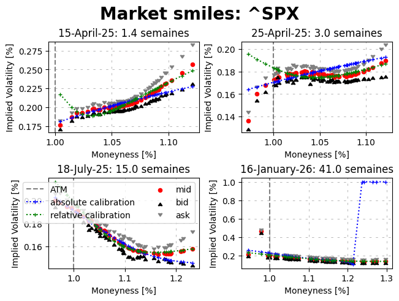

[5]:
from hestonpy.models.heston import Heston
from hestonpy.models.calibration.volatilitySmile import VolatilitySmile
from hestonpy.option.data import get_options_data, filter_data_for_maturity
import matplotlib.pyplot as plt
import matplotlib.font_manager as font_manager
fontdict_title = {
'fontsize': 20,
'fontweight': 'bold'
}
from datetime import datetime
import numpy as np
Calibration of Heston models on market data#
We will calibrate our models on S&P smiles. You can also try with Apple, but there is less liquidity on the market, so less available maturities. Some parameters,
[6]:
symbol = '^SPX'
all_market_data, spot, maturities = get_options_data(symbol)
if symbol == '^SPX':
considered_maturities = [maturities[7], maturities[14], maturities[28], maturities[38]]
else:
considered_maturities = [maturities[1], maturities[3], maturities[8], maturities[14]]
r = 0.00
params = {
"vol_initial": 0.06,
"kappa": 1.25,
"theta": 0.06,
"drift_emm": 0.00,
"sigma": 0.6,
"rho": -0.8,
}
For each maturity/smile we filter the data (based on bid-ask spread, the moneyness etc.), then we calibrate with a local optimiser to initialise our global optimiser.
[8]:
fig, axs = plt.subplots(2, 2, layout="constrained")
fig.suptitle(f'Market smiles: {symbol}', **fontdict_title)
############################################################
##### Absolute
############################################################
for maturity, ax in zip(considered_maturities, axs.flatten()):
print("="*80)
print(maturity)
print("="*80,"\n")
####################################
### Getting and filtering data
####################################
full_market_data = filter_data_for_maturity(all_market_data, maturity)
time_to_maturity = full_market_data['Time to Maturity'].iloc[0]
strikes = full_market_data['Strike'].values
bid_prices = full_market_data["Bid"].values
ask_prices = full_market_data['Ask'].values
market_ivs = full_market_data['Implied Volatility'].values
market_prices = full_market_data['Call Price'].values
marketVolatilitySmile = VolatilitySmile(
strikes=strikes,
time_to_maturity=time_to_maturity,
atm=spot,
market_ivs=market_ivs,
r=r
)
market_data = marketVolatilitySmile.filters(full_market_data, select_mid_ivs=True)
####################################
### Calibration
####################################
heston = Heston(spot=spot, r=r, **params)
initial_params = marketVolatilitySmile.calibration(
price_function=heston.call_price,
guess_correlation_sign='unknown',
initial_guess=[params['kappa'], params['theta'], params['sigma'], params['rho']],
speed='local',
)
# Absolute calibration
calibrated_params = marketVolatilitySmile.calibration(
relative_errors=False,
price_function=heston.call_price,
guess_correlation_sign='unknown',
initial_guess=[initial_params['kappa'], initial_params['theta'], initial_params['sigma'], initial_params['rho']],
speed='global',
power='mse'
)
calibrated_prices = heston.call_price(
strike=marketVolatilitySmile.strikes, time_to_maturity=time_to_maturity, **calibrated_params
)
print(marketVolatilitySmile.evaluate_calibration(calibrated_prices, 'price'))
calibrated_ivs = marketVolatilitySmile.compute_smile(prices=calibrated_prices)
print(marketVolatilitySmile.evaluate_calibration(calibrated_ivs, 'iv'))
# Relative calibration
calibrated_params_relative = marketVolatilitySmile.calibration(
relative_errors=True,
price_function=heston.call_price,
guess_correlation_sign='negative',
initial_guess=[initial_params['kappa'], initial_params['theta'], initial_params['sigma'], initial_params['rho']],
speed='global',
power='mse'
)
calibrated_prices_relative = heston.call_price(
strike=marketVolatilitySmile.strikes, time_to_maturity=time_to_maturity, **calibrated_params_relative
)
print(marketVolatilitySmile.evaluate_calibration(calibrated_prices_relative, 'price'))
calibrated_ivs_relative = marketVolatilitySmile.compute_smile(prices=calibrated_prices_relative)
print(marketVolatilitySmile.evaluate_calibration(calibrated_ivs_relative, 'iv'))
# Some plots
ask_ivs = market_data['Ask ivs'].values
bid_ivs = market_data['Bid ivs'].values
forward = marketVolatilitySmile.atm * np.exp(marketVolatilitySmile.r * marketVolatilitySmile.time_to_maturity)
if ax == axs.flatten()[-2]:
ax.axvline(1, linestyle="--", color="gray", label="ATM")
ax.plot(marketVolatilitySmile.strikes / forward, calibrated_ivs, label="absolute calibration", marker='+', color='blue', linestyle="dotted", markersize=4)
ax.plot(marketVolatilitySmile.strikes / forward, calibrated_ivs_relative, label="relative calibration", marker='+', color='green', linestyle="dotted", markersize=4)
ax.scatter(marketVolatilitySmile.strikes / forward, marketVolatilitySmile.market_ivs, label="mid", marker='o', color='red', s=20)
ax.scatter(marketVolatilitySmile.strikes / forward, bid_ivs, label="bid", marker=6, color='black', s=20)
ax.scatter(marketVolatilitySmile.strikes / forward, ask_ivs, label="ask", marker=7, color='gray', s=20)
ax.legend(loc='upper right', ncol=2, alignment='left')
else:
ax.axvline(1, linestyle="--", color="gray")
ax.plot(marketVolatilitySmile.strikes / forward, calibrated_ivs, marker='+', color='blue', linestyle="dotted", markersize=4)
ax.plot(marketVolatilitySmile.strikes / forward, calibrated_ivs_relative, marker='+', color='green', linestyle="dotted", markersize=4)
ax.scatter(marketVolatilitySmile.strikes / forward, marketVolatilitySmile.market_ivs, marker='o', color='red', s=20)
ax.scatter(marketVolatilitySmile.strikes / forward, bid_ivs, marker=6, color='black', s=20)
ax.scatter(marketVolatilitySmile.strikes / forward, ask_ivs, marker=7, color='gray', s=20)
ax.set_xlabel("Moneyness [%]")
ax.set_ylabel("Implied Volatility [%]")
date = datetime.strptime(maturity, '%Y-%m-%d').date().strftime("%d-%B-%y")
title = f"{date}: {marketVolatilitySmile.time_to_maturity * 252 / 5:.1f} semaines"
ax.set_title(title)
ax.grid(visible=True, which="major", linestyle="--", dashes=(5, 10), color="gray", linewidth=0.5, alpha=0.8)
plt.show()
================================================================================
2025-04-15
================================================================================
Calibrated parameters: v0=0.031 | kappa=1.335 | theta=0.088 | sigma=0.395 | rho=1.000
at minimum 0.183945 accepted 1
Parameters: kappa=1.335 | theta=0.088 | sigma=0.395 | rho=1.000
at minimum 0.183928 accepted 1
Parameters: kappa=1.165 | theta=0.096 | sigma=0.394 | rho=1.000
at minimum 0.183817 accepted 1
Parameters: kappa=0.054 | theta=1.405 | sigma=0.391 | rho=1.000
at minimum 0.183817 accepted 1
Parameters: kappa=0.057 | theta=1.337 | sigma=0.391 | rho=1.000
at minimum 0.183816 accepted 1
Parameters: kappa=0.041 | theta=1.825 | sigma=0.390 | rho=1.000
at minimum 0.183816 accepted 1
Parameters: kappa=0.046 | theta=1.651 | sigma=0.390 | rho=1.000
at minimum 0.183817 accepted 1
Parameters: kappa=0.050 | theta=1.530 | sigma=0.390 | rho=1.000
at minimum 0.187207 accepted 1
Parameters: kappa=0.038 | theta=2.146 | sigma=0.429 | rho=0.888
at minimum 0.183816 accepted 1
Parameters: kappa=0.043 | theta=1.773 | sigma=0.390 | rho=1.000
at minimum 0.183815 accepted 1
Parameters: kappa=0.037 | theta=2.064 | sigma=0.390 | rho=1.000
at minimum 0.183815 accepted 1
Parameters: kappa=0.033 | theta=2.282 | sigma=0.390 | rho=1.000
['requested number of basinhopping iterations completed successfully'] True
Calibrated parameters: v0=0.031 | kappa=0.033 | theta=2.282 | sigma=0.390 | rho=1.000
{'MSE': np.float64(0.184), 'RMSE': np.float64(0.429), 'MAE': np.float64(0.311), 'MSE_%': np.float64(4.567), 'RMSE_%': np.float64(2.137), 'MAE_%': np.float64(13.576)}
{'MSE': np.float64(0.498), 'RMSE': np.float64(0.706), 'MAE': np.float64(0.471), 'MSE_%': np.float64(0.089), 'RMSE_%': np.float64(0.299), 'MAE_%': np.float64(2.142)}
at minimum 0.110745 accepted 1
Parameters: kappa=1.406 | theta=0.691 | sigma=0.001 | rho=-0.623
at minimum 0.110778 accepted 1
Parameters: kappa=0.996 | theta=0.947 | sigma=0.001 | rho=-0.425
at minimum 0.014858 accepted 1
Parameters: kappa=10.000 | theta=0.386 | sigma=5.081 | rho=-0.673
at minimum 0.014883 accepted 1
Parameters: kappa=9.524 | theta=0.405 | sigma=5.085 | rho=-0.675
at minimum 0.014868 accepted 1
Parameters: kappa=9.996 | theta=0.370 | sigma=4.912 | rho=-0.662
at minimum 0.994388 accepted 1
Parameters: kappa=8.634 | theta=0.004 | sigma=5.284 | rho=-0.999
at minimum 0.014904 accepted 1
Parameters: kappa=9.247 | theta=0.429 | sigma=5.204 | rho=-0.684
at minimum 0.014966 accepted 1
Parameters: kappa=8.493 | theta=0.479 | sigma=5.323 | rho=-0.694
['success condition satisfied'] True
Calibrated parameters: v0=0.031 | kappa=10.000 | theta=0.386 | sigma=5.081 | rho=-0.673
{'MSE': np.float64(5.378), 'RMSE': np.float64(2.319), 'MAE': np.float64(0.761), 'MSE_%': np.float64(1.486), 'RMSE_%': np.float64(1.219), 'MAE_%': np.float64(9.319)}
{'MSE': np.float64(0.561), 'RMSE': np.float64(0.749), 'MAE': np.float64(0.437), 'MSE_%': np.float64(0.165), 'RMSE_%': np.float64(0.406), 'MAE_%': np.float64(2.196)}
================================================================================
2025-04-25
================================================================================
Calibrated parameters: v0=0.030 | kappa=0.926 | theta=0.001 | sigma=0.152 | rho=1.000
at minimum 3.690574 accepted 1
Parameters: kappa=0.926 | theta=0.001 | sigma=0.152 | rho=1.000
at minimum 3.690574 accepted 1
Parameters: kappa=0.926 | theta=0.001 | sigma=0.152 | rho=1.000
at minimum 3.690574 accepted 1
Parameters: kappa=0.926 | theta=0.001 | sigma=0.152 | rho=1.000
at minimum 3.690574 accepted 1
Parameters: kappa=0.926 | theta=0.001 | sigma=0.152 | rho=1.000
at minimum 3.690747 accepted 1
Parameters: kappa=1.015 | theta=0.003 | sigma=0.152 | rho=1.000
at minimum 3.690574 accepted 1
Parameters: kappa=0.926 | theta=0.001 | sigma=0.152 | rho=1.000
['success condition satisfied'] True
Calibrated parameters: v0=0.030 | kappa=0.926 | theta=0.001 | sigma=0.152 | rho=1.000
{'MSE': np.float64(3.691), 'RMSE': np.float64(1.921), 'MAE': np.float64(1.276), 'MSE_%': np.float64(3.77), 'RMSE_%': np.float64(1.942), 'MAE_%': np.float64(14.201)}
{'MSE': np.float64(0.521), 'RMSE': np.float64(0.721), 'MAE': np.float64(0.582), 'MSE_%': np.float64(0.196), 'RMSE_%': np.float64(0.443), 'MAE_%': np.float64(3.37)}
at minimum 0.010113 accepted 1
Parameters: kappa=0.934 | theta=0.108 | sigma=0.001 | rho=-0.954
at minimum 0.010105 accepted 1
Parameters: kappa=1.942 | theta=0.069 | sigma=0.001 | rho=-0.992
at minimum 0.010096 accepted 1
Parameters: kappa=2.146 | theta=0.066 | sigma=0.001 | rho=-0.886
at minimum 0.010104 accepted 1
Parameters: kappa=2.466 | theta=0.061 | sigma=0.001 | rho=-1.000
at minimum 0.003794 accepted 1
Parameters: kappa=10.000 | theta=0.057 | sigma=1.016 | rho=-0.351
at minimum 0.003951 accepted 1
Parameters: kappa=1.194 | theta=0.218 | sigma=0.822 | rho=-0.352
at minimum 0.003967 accepted 1
Parameters: kappa=0.400 | theta=0.580 | sigma=0.804 | rho=-0.351
at minimum 0.003969 accepted 1
Parameters: kappa=0.283 | theta=0.803 | sigma=0.801 | rho=-0.351
at minimum 0.003794 accepted 1
Parameters: kappa=10.000 | theta=0.057 | sigma=1.016 | rho=-0.351
at minimum 0.003795 accepted 1
Parameters: kappa=9.980 | theta=0.057 | sigma=1.016 | rho=-0.351
['requested number of basinhopping iterations completed successfully'] True
Calibrated parameters: v0=0.030 | kappa=10.000 | theta=0.057 | sigma=1.016 | rho=-0.351
{'MSE': np.float64(17.683), 'RMSE': np.float64(4.205), 'MAE': np.float64(1.635), 'MSE_%': np.float64(0.379), 'RMSE_%': np.float64(0.616), 'MAE_%': np.float64(4.876)}
{'MSE': np.float64(0.951), 'RMSE': np.float64(0.975), 'MAE': np.float64(0.426), 'MSE_%': np.float64(0.455), 'RMSE_%': np.float64(0.674), 'MAE_%': np.float64(2.625)}
================================================================================
2025-07-18
================================================================================
Calibrated parameters: v0=0.037 | kappa=0.004 | theta=3.000 | sigma=0.318 | rho=-0.730
at minimum 0.975403 accepted 1
Parameters: kappa=0.004 | theta=3.000 | sigma=0.318 | rho=-0.730
at minimum 0.975403 accepted 1
Parameters: kappa=0.004 | theta=2.998 | sigma=0.318 | rho=-0.730
at minimum 0.975413 accepted 1
Parameters: kappa=0.004 | theta=2.927 | sigma=0.318 | rho=-0.730
at minimum 0.975429 accepted 1
Parameters: kappa=0.005 | theta=2.816 | sigma=0.318 | rho=-0.730
at minimum 0.975403 accepted 1
Parameters: kappa=0.004 | theta=2.999 | sigma=0.318 | rho=-0.730
at minimum 0.975403 accepted 1
Parameters: kappa=0.004 | theta=3.000 | sigma=0.318 | rho=-0.730
['success condition satisfied'] True
Calibrated parameters: v0=0.037 | kappa=0.004 | theta=3.000 | sigma=0.318 | rho=-0.730
{'MSE': np.float64(0.975), 'RMSE': np.float64(0.988), 'MAE': np.float64(0.82), 'MSE_%': np.float64(2.335), 'RMSE_%': np.float64(1.528), 'MAE_%': np.float64(7.485)}
{'MSE': np.float64(0.125), 'RMSE': np.float64(0.354), 'MAE': np.float64(0.223), 'MSE_%': np.float64(0.051), 'RMSE_%': np.float64(0.225), 'MAE_%': np.float64(1.388)}
at minimum 0.001370 accepted 1
Parameters: kappa=0.022 | theta=3.000 | sigma=0.582 | rho=-0.722
at minimum 0.001370 accepted 1
Parameters: kappa=0.024 | theta=2.808 | sigma=0.582 | rho=-0.722
at minimum 0.001370 accepted 1
Parameters: kappa=0.022 | theta=2.999 | sigma=0.582 | rho=-0.722
['success condition satisfied'] True
Calibrated parameters: v0=0.037 | kappa=0.024 | theta=2.808 | sigma=0.582 | rho=-0.722
{'MSE': np.float64(20.174), 'RMSE': np.float64(4.492), 'MAE': np.float64(2.16), 'MSE_%': np.float64(0.137), 'RMSE_%': np.float64(0.37), 'MAE_%': np.float64(2.729)}
{'MSE': np.float64(0.167), 'RMSE': np.float64(0.408), 'MAE': np.float64(0.227), 'MSE_%': np.float64(0.044), 'RMSE_%': np.float64(0.211), 'MAE_%': np.float64(1.245)}
================================================================================
2026-01-16
================================================================================
Calibrated parameters: v0=0.040 | kappa=0.340 | theta=0.318 | sigma=0.655 | rho=-1.000
at minimum 6049.358096 accepted 1
Parameters: kappa=0.340 | theta=0.318 | sigma=0.655 | rho=-1.000
at minimum 6049.331692 accepted 1
Parameters: kappa=0.344 | theta=0.314 | sigma=0.654 | rho=-1.000
['success condition satisfied'] True
Calibrated parameters: v0=0.040 | kappa=0.344 | theta=0.314 | sigma=0.654 | rho=-1.000
{'MSE': np.float64(6049.332), 'RMSE': np.float64(77.777), 'MAE': np.float64(31.917), 'MSE_%': np.float64(124.849), 'RMSE_%': np.float64(11.174), 'MAE_%': np.float64(53.89)}
{'MSE': np.float64(1143.565), 'RMSE': np.float64(33.817), 'MAE': np.float64(14.747), 'MSE_%': np.float64(594.588), 'RMSE_%': np.float64(24.384), 'MAE_%': np.float64(101.997)}
at minimum 0.008761 accepted 1
Parameters: kappa=0.138 | theta=0.396 | sigma=0.518 | rho=-0.846
at minimum 0.008756 accepted 1
Parameters: kappa=0.156 | theta=0.362 | sigma=0.526 | rho=-0.846
at minimum 0.008777 accepted 1
Parameters: kappa=0.081 | theta=0.630 | sigma=0.503 | rho=-0.847
at minimum 0.008782 accepted 1
Parameters: kappa=0.062 | theta=0.800 | sigma=0.497 | rho=-0.847
at minimum 0.008633 accepted 1
Parameters: kappa=1.737 | theta=0.100 | sigma=1.039 | rho=-0.829
at minimum 0.008635 accepted 1
Parameters: kappa=1.477 | theta=0.104 | sigma=0.948 | rho=-0.831
['requested number of basinhopping iterations completed successfully'] True
Calibrated parameters: v0=0.040 | kappa=1.737 | theta=0.100 | sigma=1.039 | rho=-0.829
{'MSE': np.float64(6572.069), 'RMSE': np.float64(81.068), 'MAE': np.float64(18.632), 'MSE_%': np.float64(0.863), 'RMSE_%': np.float64(0.929), 'MAE_%': np.float64(4.461)}
{'MSE': np.float64(18.403), 'RMSE': np.float64(4.29), 'MAE': np.float64(1.019), 'MSE_%': np.float64(0.903), 'RMSE_%': np.float64(0.95), 'MAE_%': np.float64(3.123)}
